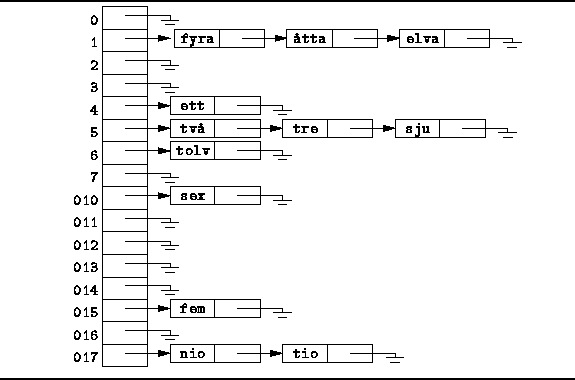

Data Structures and Algorithms
with Object-Oriented Design Patterns in Java
Data Structures and Algorithms
with Object-Oriented Design Patterns in Java
Figure  shows a hash table that uses
separate chaining
to resolve collisions.
The hash table is implemented as an array of linked lists.
To insert an item into the table,
it is appended to one of the linked lists.
The linked list to it is appended is
determined by hashing that item.
shows a hash table that uses
separate chaining
to resolve collisions.
The hash table is implemented as an array of linked lists.
To insert an item into the table,
it is appended to one of the linked lists.
The linked list to it is appended is
determined by hashing that item.

Figure: Hash table using separate chaining.
Figure illustrates an example in which
there are M=16 linked lists.
The twelve character strings "ett"-"tolv"
have been inserted into the table using the hashed values
and in the order given in Table .
Notice that in this example since M=16,
the linked list is selected by the least significant four bits
of the hashed value given in Table .
In effect,
it is only the last letter of a string which determines
the linked list in which that string appears.
 Copyright © 1998 by Bruno R. Preiss, P.Eng. All rights reserved.
Copyright © 1998 by Bruno R. Preiss, P.Eng. All rights reserved.